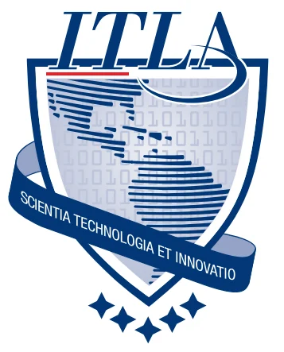

El Instituto Tecnológico de Las Américas (ITLA) es una institución técnica de estudios superiores, fundada en el año 2000 por el Estado dominicano. Única e specializada en educación tecnológica en la República Dominicana. Ha sido ganadora de diversos reconocimientos por el prestigio y calidad de sus servicios, entre ellos el Premio Nacional a la Calidad que otorga el Ministerio de Administración Pública del país, convirtiéndose en la primera institución académica en recibir el galardón. ITLA orienta su vocación a transformar la vida de la juventud dominicana mediante una formación académica que les capacite para utilizar la tecnología como catalizador del desarrollo social y humano de los ciudadanos. Las áreas de especialización del ITLA son: Desarrollo de Software, Redes de Información, Multimedia, Mecatrónica, Manufactura Automatizada y Seguridad Informática. Además cuenta con la Escuela de Idiomas.
Formar profesionales de excelencia en tecnologías avanzadas, a través de una educación de calidad orientada a los desafíos globales, que fomente la innovación, el emprendimiento y la integridad, dando cumplimiento a las leyes y regulaciones, que contribuyen al desarrollo sostenible y competitivo de la República Dominicana.
Ser referente en la formación de profesionales especializados en alta tecnología, con egresados destacados por sus aportes en innovación e investigación , capaces de desarrollar soluciones tecnológicas efectivas y sostenibles, manteniendo altos estándares de calidad y actuando con responsabilidad ética, social y profesional, conforme a los principios y estándares reconocidos a nivel nacional e internacional.
Ven y súbete a volar,
Hasta un mundo sin fronteras
Que tú mismo forjarás.
tu raza ni quien eres,
Te impiden comenzar,
Sólo importa cuánto quieres
y hasta donde puedes dar.
El futuro está en tus manos,
Ya se puede ver su luz,
El futuro ya está cerca
Es el ITLA, lo eres tú.
Siempre al frente, siempre arriba,
Siempre dando lo mejor,
Llegaremos a la cima
Para honrar nuestra nación.
futuro está en tus manos,
Ya se puede ver su luz,
El futuro ya está cerca,
Es el ITLA, lo eres tú.
